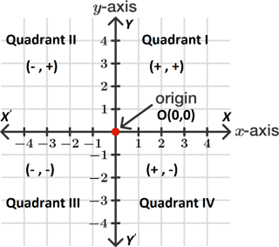
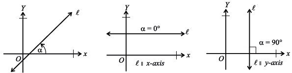
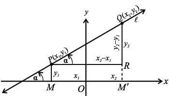
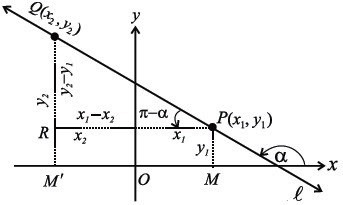
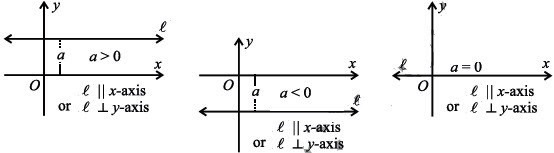
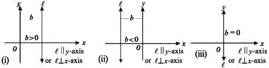

Study tip: This page contains the definitions for Chapter 7: Coordinate Geometry. Once you've learned these, practise with the Chapter 7 MCQs and the Review Exercise.
✅ Definitions ready
All key definitions for Chapter 7 are listed below. Use the Show Definition button on each card to reveal the answer, then cross-check with the PDF embedded further down. The solved exercises are also available on this site.
📘 Chapter 7 Definitions – Solved
Learn and revise Class 9 Maths Chapter 7 Definitions on Coordinate Geometry. This page covers all the key terms and formulas for the coordinate plane, distance and midpoint, slope, line equations, and normal form. Aligned with the Punjab Curriculum and Textbook Board Class 9 Mathematics unit on Coordinate Geometry.
📖 What's Inside: This page covers definitions of the coordinate plane, ordered pairs, origin, abscissa and ordinate, distance formula, midpoint formula, inclination, slope, slope-intercept form, point-slope form, symmetric form, two-point form, intercept form, and normal form. Each definition is clearly stated with examples and formulas where needed.
If the PDF does not load, open the Definitions directly on Google Drive.
Advertisement
🔗 Quick Links – Chapter 7: Coordinate Geometry
Important Revision Points
- Coordinate Plane: Formed by two perpendicular lines (axes).
- Ordered Pair: \((x, y)\) where order matters.
- Distance Formula: \(d = \sqrt{(x_2 - x_1)^2 + (y_2 - y_1)^2}\).
- Midpoint Formula: \(M = \left( \dfrac{x_1 + x_2}{2}, \dfrac{y_1 + y_2}{2} \right)\).
- Slope: \(m = \dfrac{y_2 - y_1}{x_2 - x_1} = \tan \alpha\).
- Slope-Intercept Form: \(y = mx + c\).
- Point-Slope Form: \(y - y_1 = m(x - x_1)\).
- Two-Point Form: \(\dfrac{y - y_1}{y_2 - y_1} = \dfrac{x - x_1}{x_2 - x_1}\).
- Intercept Form: \(\dfrac{x}{a} + \dfrac{y}{b} = 1\).
- Normal Form: \(x \cos \alpha + y \sin \alpha = p\).
📐 Chapter 7 – Definitions & Key Terms
Def 1
Define coordinate plane (Cartesian plane).
Definition
The plane formed by two straight lines perpendicular to each other is called the coordinate plane, and the lines \(XOX'\) and \(YOY'\) are called coordinate axes.
Def 2
Define ordered pair.
Definition
An ordered pair of real numbers \(x\) and \(y\) is a pair \((x, y)\) in which elements are written in a specific order.
Note: \((x, y) \neq (y, x)\).
Def 3
Define origin.
Definition
The point of intersection of two coordinate axes is called the origin.
Def 4
Differentiate between abscissa and ordinate.
Definition
The \(x\)-coordinate of the point is called the abscissa of the point \(P(x, y)\), and the \(y\)-coordinate is called its ordinate.

Def 5
What are the coordinates of points lying on the axes?
Definition
On the \(x\)-axis: \((a, 0)\)
On the \(y\)-axis: \((0, b)\)
Def 6
Define distance formula.
Definition
If \(A(x_1, y_1)\) and \(B(x_2, y_2)\) are two points and \(d\) is the distance between them, then:
\(d = |\overline{AB}| = \sqrt{(x_2 - x_1)^2 + (y_2 - y_1)^2}, \quad d \geq 0\)
Note: \(|\overline{AB}|\) stands for \(m\overline{AB}\).
Def 7
Define midpoint formula.
Definition
If \(A(x_1, y_1)\) and \(B(x_2, y_2)\) are two points in the plane, then the midpoint \(M(x, y)\) of the line segment \(\overline{AB}\) is:
\(M(x, y) = \left(\dfrac{x_1 + x_2}{2}, \dfrac{y_1 + y_2}{2}\right)\)
Def 8
What is the inclination of a line?
Definition
The inclination of a line is the angle \(\alpha\) (\(0^\circ < \alpha < 180^\circ\)) measured counterclockwise from the positive \(x\)-axis to a non-horizontal straight line \(l\).

If the line \(l\) is parallel to the \(x\)-axis, then \(\alpha = 0^\circ\).
If the line \(l\) is parallel to the \(y\)-axis, then \(\alpha = 90^\circ\).
Def 9
What is the slope or gradient of a line?
Definition
The slope or gradient of an inclined path is a measure of its steepness, denoted by \(m\). It is defined as the ratio of rise to run:
\(m = \dfrac{rise}{run} = \dfrac{y}{x} = \tan \alpha\)
In analytical geometry, for a non-vertical line with inclination \(\alpha\):
\(m = \tan \alpha\)
Def 10
What are the special cases of slope?
Definition
(i) If \(l\) is horizontal, its slope is zero.
(ii) If \(l\) is vertical, its slope is undefined.
(iii) If \(0^\circ < \alpha < 90^\circ\), then \(m\) is positive.
(iv) If \(90^\circ < \alpha < 180^\circ\), then \(m\) is negative.
Def 11
What is the formula for the slope of a line passing through two points?
Definition
Theorem: If a non-vertical line \(l\) with inclination \(\alpha\) passes through two points \(P(x_1, y_1)\) and \(Q(x_2, y_2)\), then the slope or gradient \(m\) of the line is given by:
\(m = \dfrac{y_2 - y_1}{x_2 - x_1} = \tan \alpha\)

Proof: Let \(m\) be the slope of the line \(l\). Draw perpendiculars from the points: \(PM\) from \(P\) to the \(x\)-axis, \(QM'\) from \(Q\) to the \(x\)-axis, and \(PR\) from \(P\) to \(QM'\).
Now, \(m\angle RPQ = \alpha\), \(mPR = x_2 - x_1\), \(mQR = y_2 - y_1\). Using the definition of slope from the right triangle \(PRQ\):
\(m = \tan \alpha = \dfrac{y_2 - y_1}{x_2 - x_1}\)

Case I: When \(0 < \alpha < \frac{\pi}{2}\). In the right triangle \(PRQ\), \(\tan \alpha = \frac{y_2 - y_1}{x_2 - x_1}\).
Case II: When \(\frac{\pi}{2} < \alpha < \pi\). In the right triangle \(PRQ\), \(\tan(\pi - \alpha) = \frac{y_2 - y_1}{x_1 - x_2} \Rightarrow -\tan \alpha = \frac{y_2 - y_1}{x_1 - x_2} \Rightarrow \tan \alpha = \frac{y_2 - y_1}{x_2 - x_1} \Rightarrow m = \frac{y_2 - y_1}{x_2 - x_1}\).
Thus, if \(P(x_1, y_1)\) and \(Q(x_2, y_2)\) are two points on a line, then the slope of \(\overrightarrow{PQ}\) is given by \(m = \dfrac{y_2 - y_1}{x_2 - x_1}\) or \(m = \dfrac{y_1 - y_2}{x_1 - x_2}\).
Def 12
What are the conditions for parallel and perpendicular lines?
Definition
Theorem 2: Let two lines \(l_1\) and \(l_2\) have slopes \(m_1\) and \(m_2\), respectively:
(i) Lines are parallel if and only if \(m_1 = m_2\).
(ii) Lines are perpendicular if and only if \(m_1 = \dfrac{-1}{m_2}\) or \(m_1 \cdot m_2 = -1\).
Note:
(i) \(m \neq \dfrac{y_2 - y_1}{x_1 - x_2}\) or \(m \neq \dfrac{y_1 - y_2}{x_2 - x_1}\).
(ii) A line \(l\) is horizontal if and only if \(m = 0\) (since \(\alpha = 0^\circ\)).
(iii) A line \(l\) is vertical if and only if \(m\) is not defined (since \(\alpha = 90^\circ\)).
(iv) If slope of \(\overline{AB}\) = slope of \(\overline{BC}\), then the points \(A, B\), and \(C\) are collinear.
Def 13
What is the equation of a straight line parallel to the x-axis (or perpendicular to the y-axis)?
Definition
A line that goes left to right (horizontal) is called a line parallel to the \(x\)-axis. It is also said to be perpendicular to the \(y\)-axis. The equation of this line is:
\(y = a\)

0, a < 0, and a = 0" class="mx-auto rounded-lg shadow-sm border border-primary-100">
Def 14
What is the equation of a straight line parallel to the y-axis (or perpendicular to the x-axis)?
Definition
A line that goes up and down (vertical) is called a line parallel to the \(y\)-axis. It is also said to be perpendicular to the \(x\)-axis. The equation of this line is:
\(x = b\)

0, b < 0, and b = 0" class="mx-auto rounded-lg shadow-sm border border-primary-100">
Def 15
What are the intercepts of a straight line?
Definition
The \(x\)-intercept of a line is the point where it crosses the \(x\)-axis. If the line crosses the \(x\)-axis at \((a, 0)\), then \(x\)-intercept \(= a\).
The \(y\)-intercept of a line is the point where it crosses the \(y\)-axis. If the line crosses the \(y\)-axis at \((0, b)\), then \(y\)-intercept \(= b\).
Def 16
What is the slope-intercept form of a straight line?
Definition
The equation of a non-vertical straight line with slope \(m\) and \(y\)-intercept \(c\) is:
\(y = mx + c\)
Note: If the line passes through the origin, then \(c = 0\). So, the equation becomes \(y = mx\).
Def 17
What is the Point-Slope Form of the Equation of a Straight Line?
Definition
If a non-vertical line with slope \(m\) passes through a point \(Q(x_1, y_1)\), then its equation is:
\(y - y_1 = m(x - x_1)\)
Def 18
What is the Symmetric Form of the Equation of a Straight Line?
Definition
If a line passes through a point \((x_1, y_1)\) and has inclination \(\alpha\), we know from trigonometry:
\(\tan \alpha = \dfrac{y - y_1}{x - x_1}\)
Rewriting:
\(\dfrac{x - x_1}{\cos \alpha} = \dfrac{y - y_1}{\sin \alpha} = r \ (say)\)
This is called the symmetric form of the equation of a straight line.
Def 19
What is the equation of a non-vertical straight line passing through two points \(Q(x_1, y_1)\) and \(R(x_2, y_2)\)?
Definition
The equation of the line passing through two given points is:
\(y - y_1 = \dfrac{y_2 - y_1}{x_2 - x_1}(x - x_1)\)
or \(y - y_2 = \dfrac{y_2 - y_1}{x_2 - x_1}(x - x_2)\)
Def 20
What is the equation of a line whose non-zero x-intercept is a and y-intercept is b?
Definition
The equation of a line with non-zero \(x\)-intercept \(a\) and \(y\)-intercept \(b\) is:
\(\dfrac{x}{a} + \dfrac{y}{b} = 1\)
Def 21
What is the equation of a non-vertical straight line \(l\), where the length of the perpendicular from the origin to \(l\) is \(p\), and \(\alpha\) is the inclination of this perpendicular?
Definition
The equation of the line is:
\(x \cos \alpha + y \sin \alpha = p\)
Def 22
How can the general equation of a line \(ax + by + c = 0\) be transformed into standard forms?
Definition
The general form of a straight line \(ax + by + c = 0\) can be converted into different standard forms as follows:
i. Slope-Intercept Form:
\(ax + by + c = 0 \Rightarrow by = -ax - c \Rightarrow y = -\dfrac{a}{b}x - \dfrac{c}{b}\)
Comparing with \(y = mx + c_1\): \(m = -\dfrac{a}{b}\), \(c_1 = -\dfrac{c}{b}\).
ii. Point-Slope Form:
We already found the slope from the general form: \(m = -\dfrac{a}{b}\). Take a known point on the line: Let \(Q\left(-\dfrac{c}{a}, 0\right)\). Using the point-slope form:
\(y - y_1 = m(x - x_1)\)
\(y - 0 = -\dfrac{a}{b}\left[x - \left(-\dfrac{c}{a}\right)\right]\)
\(y = -\dfrac{a}{b}x - \dfrac{c}{a}\)
iii. Symmetric Form:
We know from the slope: \(m = \tan \alpha = -\dfrac{a}{b}\). Use trigonometric identities: \(\sin \alpha = \dfrac{a}{\pm \sqrt{a^2 + b^2}}\), \(\cos \alpha = \dfrac{b}{\pm \sqrt{a^2 + b^2}}\).
Using point \(Q\left(-\dfrac{c}{a}, 0\right)\) in \(\dfrac{x - x_1}{\cos \alpha} = \dfrac{y - y_1}{\sin \alpha} = r\) (say):
\(\dfrac{x + \dfrac{c}{a}}{\dfrac{b}{\pm\sqrt{a^2 + b^2}}} = \dfrac{y - 0}{\dfrac{a}{\pm\sqrt{a^2 + b^2}}} = r \ (say)\)
iv. Two-Point Form:
Choose two points on the line: \(A\left(-\dfrac{c}{a}, 0\right)\) and \(B\left(0, -\dfrac{c}{b}\right)\). Use the two-point form:
\(y = \dfrac{y_2 - y_1}{x_2 - x_1}(x - x_1) + y_1\)
\(y = \dfrac{-c/b - 0}{0 - (-c/a)}(x - (-c/a)) + 0\)
\(y = \dfrac{-a}{b}(x + \dfrac{c}{a})\)
\(y = -\dfrac{a}{b}x - \dfrac{c}{b}\)
v. Intercept Form:
\(ax + by + c = 0 \Rightarrow ax + by = -c\)
\(\dfrac{ax}{-c} + \dfrac{by}{-c} = -\dfrac{c}{-c}\)
\(\dfrac{x}{-c/a} + \dfrac{y}{-c/b} = 1\)
Where \(x\)-intercept \(= -\dfrac{c}{a}\) and \(y\)-intercept \(= -\dfrac{c}{b}\).
vi. Normal Form:
\(ax + by + c = 0\)
For the normal form, the equation is expressed as \(x\cos\alpha + y\sin\alpha = p\), where \(p\) is the perpendicular distance from the origin and \(\alpha\) is the angle of the perpendicular.
Key Concepts – Coordinate Geometry
- Coordinate Plane: Formed by two perpendicular lines (axes).
- Ordered Pair: \((x, y)\) where order matters.
- Distance Formula: \(d = \sqrt{(x_2 - x_1)^2 + (y_2 - y_1)^2}\).
- Midpoint Formula: \(M = \left( \dfrac{x_1 + x_2}{2}, \dfrac{y_1 + y_2}{2} \right)\).
- Slope: \(m = \dfrac{y_2 - y_1}{x_2 - x_1} = \tan \alpha\).
- Slope-Intercept Form: \(y = mx + c\).
- Point-Slope Form: \(y - y_1 = m(x - x_1)\).
- Two-Point Form: \(\dfrac{y - y_1}{y_2 - y_1} = \dfrac{x - x_1}{x_2 - x_1}\).
- Intercept Form: \(\dfrac{x}{a} + \dfrac{y}{b} = 1\).
- Normal Form: \(x \cos \alpha + y \sin \alpha = p\).
❓ Frequently Asked Questions – Definitions
This page covers all key terms for Chapter 7, including the coordinate plane, ordered pairs, origin, abscissa and ordinate, distance formula, midpoint formula, inclination, slope, and various forms of linear equations (slope-intercept, point-slope, symmetric, two-point, intercept, and normal form).
The complete PDF is embedded near the top of this page and can also be downloaded with the "⬇️ Download PDF – Definitions (Free)" button directly below the PDF viewer.
The distance formula is \(d = \sqrt{(x_2 - x_1)^2 + (y_2 - y_1)^2}\), which calculates the straight-line distance between two points \((x_1, y_1)\) and \((x_2, y_2)\) on the Cartesian plane.
The slope of a line is a measure of its steepness. It is defined as \(m = \tan \alpha\), where \(\alpha\) is the inclination of the line. For two points \((x_1, y_1)\) and \((x_2, y_2)\), the slope is \(m = \dfrac{y_2 - y_1}{x_2 - x_1}\).
The midpoint is found using the formula \(M = \left( \dfrac{x_1 + x_2}{2}, \dfrac{y_1 + y_2}{2} \right)\), which gives the point exactly halfway between the two endpoints.
Use the Chapter 7 quick links on this page for Exercise 7.1, 7.2, 7.3, the Review Exercise, and MCQs, or return to the Chapter 7 hub page for the full list.
Chapter 1Real Numbers
Chapter 2Logarithms
Chapter 3Sets and Functions
Chapter 4Factorization and Algebraic Manipulation
Chapter 5Linear Equations and Inequalities
Chapter 6Trigonometry
Chapter 7✨ Coordinate Geometry
Chapter 8Logic
Chapter 9Similar Figures
Chapter 10Graphs of Functions
Chapter 11Loci and Construction
Chapter 12Information Handling
Chapter 13Probability
📖 Complete syllabus coverage for Class 9 Mathematics – Chapters 1 to 13
Created by Hira Science Academy | Aligned with Punjab Board Class 9 Mathematics